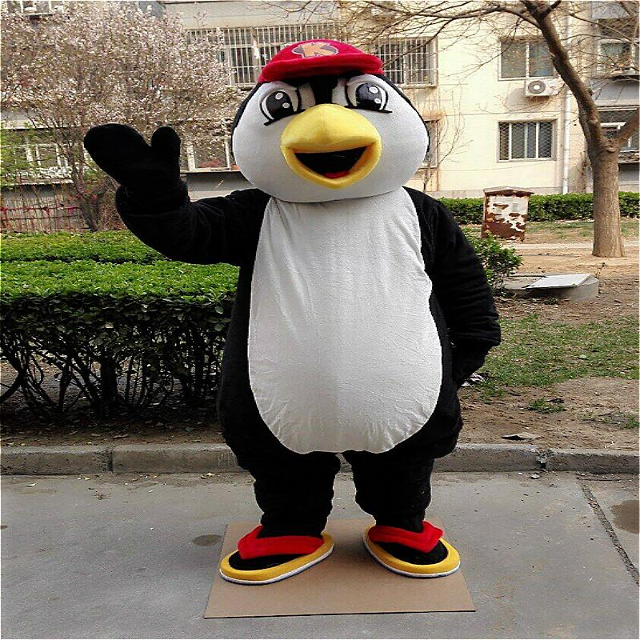

KANSAS KITE
Kite is mascot of kansas city basket ball team. Kite represents penguin which will be in white and black color. Kite is an mascot created by Pragnya Kalvakol.
Below are some of the fun facts about mascot penguin.
Penguins evolved to fly underwater.
A penguin’s thick feathers aren’t the only way this bird stays warm.
Penguins live in many locations and habitats.
Penguin feet are adapted to walk long distances.

Link for index